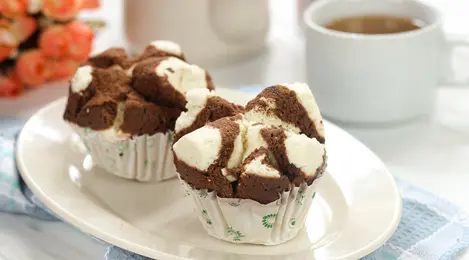

Bolu Kukus
Bahan:
- 1 butir telur
- 90 gr gula pasir
- 100 gr terigu protein sedang, misal kunci biru
- 60ml minuman soda, misal sprite
- 1/2 sdt vanili cair/ bubuk
- 1/2 sdt emulsifier, misal SP, TBM, Ovalet dll
- pasta coklat secukupnya
Cara Membuat:
- Campur gula pasir dengan telur, tepung terigu, vanili dan minuman soda.
- Mixer selama 7 menit.
- Tambahkan emulsifier.
- Kocok kembali selama 3 menit.
- Ambil beberapa sendok adonan untuk diberi pasta.
- Lapisi cetakan bolu kukus dengan cup kertas.
- Masukan adonan kedalam cetakan bolu kukus hingga penuh.
- Masukan kedalam kukusan yang sudah dipanaskan terlebih dahulu.
- Lapisi tutup kukusan dengan kain untuk menghindari tetesan air.
- Kukus selama 10-15 menit dengan api besar.
- Selesai.
TIPS ANTI GAGAL:
- Gunakan api besar saat mengukus dan pastikan air sudah mendidih dan banyak uap ketika memasukkan adonan.
- Kocok telur hingga benar-benar kental berjejak.
- Jangan membuka penutup sama sekali di 10 menit pertama adonan masuk pengukus.
- Pastikan air soda masih fresh, belum hilang sodanya.
- Gunakan cetakan khusus cup bolu kukus, yang ada lubang-lubangnya.
- Tutup penutup kukusan dengan kain untuk menghindari tetsan air ke adonan, kecuali jika menggunakan klakat.
- Beri jarak antar cup ketika dikukus, jangan terlalu berdekatan supaya mengembang sempurna.